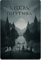
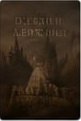
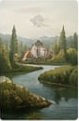
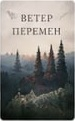
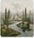
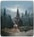
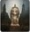
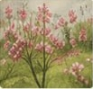

Сквозь туман
Анна Петрова
Фэнтези◉ 1 245 ♡ 199
Анна Петрова
Фэнтези◉ 1 245 ♡ 199
Игорь Каменев
Драма◉ 965 ♡ 142
Мария Литвинова
Проза◉ 817 ♡ 131
Ольга Зорина
Рассказ◉ 654 ♡ 96О простых приёмах, которые помогают создать живое начало и удержать внимание.
Собираем наблюдения авторов и читателей в одной редакционной теме.
Елена Текза · новая глава уже доступна
Мария Литвинова · редакционная рекомендация
Дмитрий Орлов · подборка новых стихов

Письма из ветраЕлена Текза · сегодняФэнтези
Звёзды над намиДмитрий Орлов · сегодняПоэзия
Светлая обительОльга Зорина · вчераПроза
Приём работ до 30 мая 2024
Призовой фонд: 50 000 ₽35 работЧитаем новые рассказы и говорим с авторами